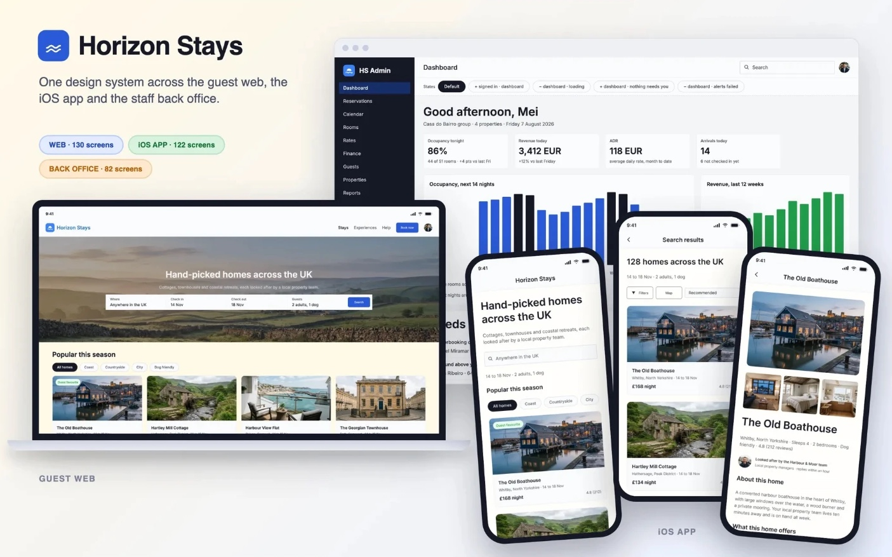
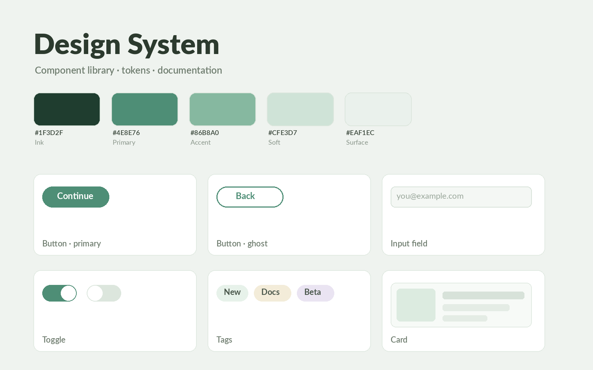
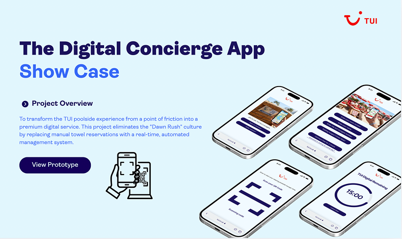

User Experience Designer & Design System Enthusiast: Backed by a Computer Systems Engineering background (1st Class Honours), I combine systems thinking with research-led, accessible design. I turn messy, real-world problems into scalable, cohesive, and impactful digital experiences.
User Experience Designer Intern
@ Nexcell Solution
Freelance UX/UI Designer
Agentic design system
@ Horizon Stay
Agentic Design Systems: Foundations (2026)
Google UX Professional Certificate (2026)
Design System Hands-on Training
Real products, research-heavy case studies, and a few concept projects where I pushed my craft.

A design system for a UK holiday-home booking product: 23 components, 179 tokens and a crew of seven AI agents, shipped across a web app, an iOS app and a back office.
Read case study →
Audited component usage across a national design system, mapped user journeys, and improved component documentation adopted by designers and developers.
Read summary →
Turned a 12% guest-complaint rate into a digital service concept: a QR-based live lounger map with fair-use timers, backed by a phased rollout plan and £60k budget model.
Read case study →